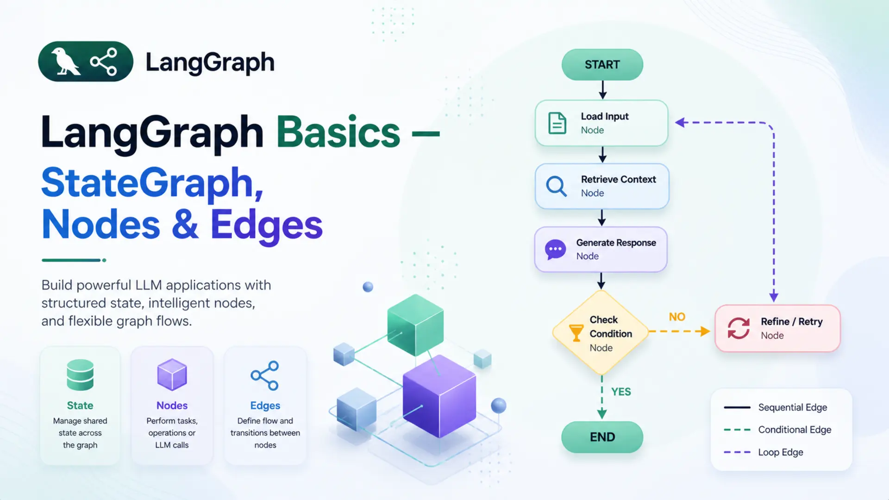
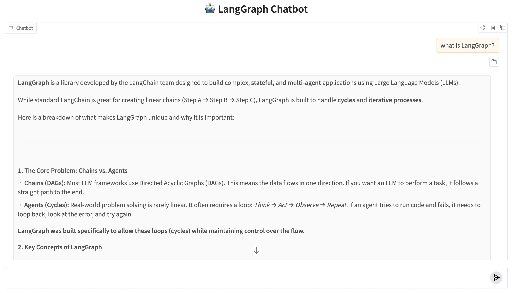

LangGraph Basics: Part 1 — StateGraph, Nodes & Edges

🧩 Building AI applications that just run a single prompt and return a result is straightforward. But real-world agents are different — they need to remember context, make decisions, loop back, call tools, and hand off work to other agents. That's exactly the kind of complexity LangGraph is designed to handle.
🗺️ LangGraph lets you model your AI application as a graph — a structure where each processing step is a node, the connections between steps are edges, and all data flows through a shared state. This simple idea unlocks surprisingly powerful patterns — from multi-step pipelines to autonomous agents.
🎯 This is Part 1 of the LangGraph Basics series. Before writing any complex agent, you need a firm grip on these three fundamentals: StateGraph, Nodes, and Edges. We'll cover every concept step by step — with clear analogies, isolated code examples, and a complete working Q&A bot powered by Google Gemini at the end.
✅ Who this is for: You're comfortable with Python and have some LangChain experience. No prior LangGraph knowledge needed.
📚 Table of Contents
🤔 1. What is LangGraph?
💡 Why LangGraph Exists
LangChain made it easy to chain prompts, models, and tools into a pipeline. A typical chain looks like prompt | llm | parser — one input flows through each step and produces one output. For simple, linear use cases, this works perfectly.
But real-world AI applications rarely follow a straight line. Consider a customer support agent — it reads a message, decides whether to search a knowledge base or call a tool, retries if something fails, and remembers the full conversation history. A linear pipeline has no way to model that.
💡 The core problem: linear chains move in one direction — A → B → C → done. They can't loop, branch based on conditions, or carry memory across steps.
LangGraph was built to solve this. Instead of a pipeline, it models an application as a directed graph — where each processing step is a node, the connections between steps are edges, and all shared data flows through a central state object. This makes loops, conditional branching, retries, and multi-step memory all natural to express.
🧪 Example — a research agent:
- It receives a question from the user
- It searches the web for relevant information
- If the result is not sufficient, it searches again — a loop
- Once the result is good enough, it generates a final answer
Step 3 — looping back to search — is impossible in a linear chain. In LangGraph, it's just an edge that points back to the search node. That's the fundamental shift LangGraph introduces.
⚖️ LangGraph vs LangChain
LangChain and LangGraph are often mentioned together, but they serve different roles. LangChain provides the building blocks — LLMs, prompt templates, tools, output parsers, and retrievers. LangGraph uses those building blocks to define how they connect, flow, and interact over multiple steps.
They're not competing frameworks — LangGraph is built on top of LangChain. The models and tools are still LangChain objects; LangGraph controls how they're orchestrated.
| Feature | LangChain | LangGraph |
|---|---|---|
| Best for | Simple linear pipelines | Complex stateful workflows |
| Flow | Linear — A → B → C | Graph — any direction |
| Loops | Not supported | Native support |
| State | No built-in shared state | Central shared state object |
| Branching | Limited | Conditional edges |
| Multi-agent | Not designed for it | First-class support |
✅ A good rule of thumb: if the workflow always follows the same fixed steps, LangChain is enough. If any step needs to decide what happens next, loop, or share memory — that's LangGraph territory.
⚙️ 2. Installation & Setup
Before writing any code, four things need to be in place: the right Python version, a virtual environment, the required packages, and a Gemini API key.
🐍 Python version:
This series uses Python 3.12. Check your version before starting:
🔒 Create a virtual environment:
A virtual environment keeps the project's dependencies isolated from other Python projects on the machine:
📦 Install the dependencies:
All packages for this series are listed in requirements.txt:
🔑 Gemini API key:
Get a free API key from Google AI Studio. Create a .env file and add the following:
⚠️ Never commit the .env file to Git. Add it to .gitignore to keep your API key safe.
🗂️ Project structure for this post:
Each file maps to a specific concept covered in this post — state.py to Section 4, nodes.py to Section 5, graph.py to Sections 6 and 7, and qa_runner.py to Section 8. The code is built up incrementally, so each file makes sense on its own before they're wired together.
🔧 Configuring the LLM
The LLM setup is split across two files. config.py loads the .env file and reads the model settings into a Config class. llm.py imports Config and uses it to build the GeminiLLM wrapper around ChatGoogleGenerativeAI.
Config reads three values from the environment: the model name, temperature, and retry limit — with sensible defaults if any are missing. GeminiLLM instantiates ChatGoogleGenerativeAI using those values and exposes it via get_llm(). Nodes that need the LLM import only GeminiLLM from llm.py — they don't need to know anything about how it's configured.
🗺️ 3. The Mental Model: Think in Graphs
Before writing any code, it helps to have a clear mental picture of how LangGraph works. The best way to think about it is an assembly line.
Imagine a car factory. A car body enters the line as a bare frame. At each station, workers perform a specific task — one station fits the engine, the next installs the dashboard, another adds the doors. The car moves from station to station in a defined order, getting more complete at each step, until it rolls off the line fully built.
A LangGraph application works the same way:
- 🏭 The stations are Nodes — each one performs a specific piece of work
- 🔗 The conveyor belt connections are Edges — they define which station comes next
- 🚗 The car being built is the State — the shared data that every station reads from and writes to
Every LangGraph application is built from exactly these three things. Nothing more.
State
A shared Python dictionary that travels through the entire graph. Every node reads from it and writes updates back to it.
Nodes
Python functions that do the actual work. Each node receives the current state, performs its task, and returns an updated state.
Edges
Connections between nodes that define the execution order. They tell the graph which node to visit after the current one finishes.
Here is what the simplest possible LangGraph application looks like — the one built in this post:
📌 Key insight: the graph doesn't call nodes directly — it invokes the compiled app with an initial state, and the graph engine handles the rest, moving state from node to node along the defined edges.
The next three sections break down each building block — State, Nodes, and Edges — one at a time, with code examples. By Section 7 they'll be wired together into a working graph.
💾 4. State — The Shared Memory
🧠 What is State?
State is a Python dictionary that is created once at the start and passed through every node in the graph. Each node can read any value from it and write updates back to it. By the time execution reaches END, the state holds the final result.
Think of it as a shared notepad in a relay race. The first runner writes the question on it, hands it to the next runner, who reads the question, writes the answer, and passes it forward. Every participant in the race works from the same notepad — nobody holds private information.
🔗 Key rule: a node never receives separate arguments — it always receives the entire state and returns only the fields it wants to update. Fields it doesn't touch remain unchanged.
For the Q&A bot in this post, the state carries two things:
- 📥 question — the user's input, set at the start
- 📤 answer — filled in by the answer node after calling the LLM
📝 Defining State with TypedDict
State is defined using Python's TypedDict — a special class that describes the shape of a dictionary with type hints. It gives structure, IDE autocompletion, and makes the code self-documenting without adding any runtime overhead.
Here is the complete state.py file:
That's all it takes. QAState is a dictionary with exactly two string fields. LangGraph uses this class to validate that every node returns data that matches the state's structure.
When the graph is invoked, the initial state is passed in as a plain dictionary matching this shape:
The answer field starts empty — it doesn't need to be passed in. The answer node will populate it. After the graph finishes, result is the final state dictionary with both fields filled:
💡 A node returns only the fields it updated — not the entire state. LangGraph merges the returned dictionary back into the existing state automatically. So if a node returns {"answer": "..."}, the question field is preserved untouched.
🔧 5. Nodes — The Workers
🤖 What is a Node?
A node is a Python function that performs one specific task inside the graph. It has a strict contract with LangGraph:
- 📥 Input — receives the current state dictionary
- ⚙️ Work — does something useful (calls an LLM, searches a database, formats text, etc.)
- 📤 Output — returns a dictionary containing only the fields it wants to update
Think of a node as a specialist in a hospital. A radiologist receives a patient (state), reads their scan (reads from state), writes a report (updates state), and sends the patient to the next specialist (next node via edge). The radiologist doesn't care about the patient's billing details — they only work on what's relevant to them and update only their part.
A graph can have one node or a hundred. Each one is independent and focused on a single responsibility. This makes it easy to test, replace, or extend individual nodes without touching the rest of the graph.
✍️ Writing a Node Function
Nodes are defined as methods inside a class. The class holds the LLM (or any other dependency) in its constructor, and each method is a node. Here is the complete nodes.py:
Breaking it down step by step:
- __init__ — creates the Gemini LLM once when the class is instantiated. Keeping it here means the LLM is only initialised once, not on every node call.
- answer_node(self, state) — this is the node LangGraph will call. It takes the full state and reads state["question"].
- self.llm.invoke(...) — sends the question to Gemini and gets a response back.
- Content extraction — newer versions of langchain-google-genai return response.content as a list of content blocks rather than a plain string. The check handles both formats cleanly.
- return {"answer": content} — returns only the updated field. LangGraph merges this back into the full state automatically.
-> dict and not -> QAState?QAState has two fields: question and answer. But answer_node only returns {"answer": content} — one field, not both. Annotating the return as -> QAState would imply the full state is being returned, which is misleading. LangGraph node functions return a partial state update — only the keys that changed. LangGraph merges that partial dict back into the full state internally. -> dict is the accurate annotation here.
🔗 6. Edges — The Connections
➡️ Normal Edges
An edge is a connection between two nodes that defines which node runs next. A normal edge is unconditional — when node A finishes, node B always runs next, no questions asked.
Think of edges as one-way roads on a map. A road from City A to City B means every traveller who leaves City A will arrive at City B — there's no choice, no condition, no detour. Normal edges work exactly the same way.
Adding a normal edge in code is a single line:
Once node_a finishes and returns its state update, LangGraph immediately hands control to node_b. The updated state travels along the edge automatically — there's nothing extra to pass or return.
💡 Later in the series, you'll see conditional edges — edges that decide which node to visit next based on the current state. They're built on the same idea, just with a routing function in between. For now, normal edges are all we need.
🚦 START and END
Every graph needs a defined entry point and a defined exit point. LangGraph provides two special constants for this — START and END — imported directly from langgraph.graph.
START is not a real node — it's a marker that tells the graph where execution begins. An edge from START to a node means that node runs first when the graph is invoked.
END is also not a real node — it's a marker that tells the graph where to stop. When a node connects to END, it means that node is the last step. After it finishes, LangGraph returns the final state to the caller.
For the Q&A bot, the edge setup looks like this:
This creates a straight path: START → answer → END. The initial state enters at START, the answer node processes it, and the final state is returned at END.
📌 Every graph must have: at least one edge from START to a node, and at least one edge from a node to END. Without either, the graph will raise an error when compiled.
🏗️ 7. StateGraph — Building the Graph
🔩 Creating & Wiring the Graph
StateGraph is the central class in LangGraph. It acts as a blueprint — you tell it what the state looks like, register your nodes, connect them with edges, and then compile it into a runnable application.
Creating a graph starts with passing the state class as an argument. This tells LangGraph what structure to expect from every node's input and output:
With the graph created, nodes are registered using add_node(). The first argument is a string name — this is the identifier used when adding edges. The second argument is the actual function or method to call:
The name "answer" is what the edges refer to. The method self.nodes.answer_node is what actually runs when that node is reached. Now the edges are added to connect everything:
At this point the graph is fully wired. Here is the complete graph.py with all of this put together inside a class:
_build() is a private method called once in __init__. It creates the graph, registers the node, adds the edges, compiles it, and returns the compiled app. save_figure() uses LangGraph's built-in Mermaid export to generate a visual diagram of the graph structure.
✅ Compiling the Graph
graph.compile() is the final step before a graph can run. It validates the entire structure — checking that every node is reachable, that there is a path from START to END, and that all edge references point to registered nodes. If anything is wrong, it raises an error here rather than at runtime.
The result of compile() is a compiled app — a fully validated, executable version of the graph. This is what gets invoked with data:
QAGraph has no invoke() method — and neither does StateGraph. The method comes from a completely different object: the CompiledStateGraph that graph.compile() returns. CompiledStateGraph inherits from LangChain's Runnable base class, which is what provides .invoke(), .stream(), and .ainvoke().
The object chain makes this concrete:
So when self.app.invoke() is called in QARunner, it is calling invoke() on the CompiledStateGraph — never on QAGraph.
Here is what the CompiledStateGraph engine does internally when invoke() is called with {"question": "What is LangGraph?"}:
- Step 1 — Initialise state. The input dict is merged with the state schema (QAState). Missing fields get empty defaults: {"question": "What is LangGraph?", "answer": ""}
- Step 2 — Read the edge from START. The engine looks at the edge registry: START → "answer". It looks up which callable was registered under the name "answer". That was set by graph.add_node("answer", self.nodes.answer_node) — so the engine resolves "answer" to QANodes.answer_node.
- Step 3 — Call the node. The engine calls answer_node({"question": "What is LangGraph?", "answer": ""}). The node sends the question to Gemini and returns the partial update: {"answer": "LangGraph is a library for building stateful..."}
- Step 4 — Merge state. The engine merges the partial update into the full state: {"question": "What is LangGraph?", "answer": "LangGraph is a library..."}
- Step 5 — Read the next edge. The engine looks at the edge registry again: "answer" → END. END is a sentinel — the engine stops execution and returns the final state to the caller.
| Method | Description | Use when |
|---|---|---|
| .invoke() | Runs the graph and returns the final state | Scripts, batch processing |
| .stream() | Yields state updates as each node finishes | Real-time output, debugging |
| .ainvoke() | Async version of invoke | FastAPI, async applications |
✅ Always call compile() before invoking. Calling a raw StateGraph directly will raise an error — it must be compiled first.
🤖 8. Complete Example: Simple Q&A Bot
Everything covered so far — state, nodes, edges, and the graph — comes together in this example. The project is split across five files, each responsible for one concept. Here is a recap of the full structure before walking through the entry point:
📖 Full Code Walkthrough
The entry point is qa_runner.py. It contains a QARunner class that wires the compiled graph to a clean interface, and a __main__ block that runs the demo:
Breaking it down step by step:
- QARunner.__init__ — instantiates QAGraph, which internally builds the graph, registers the node, adds the edges, and compiles everything. By the time __init__ finishes, the app is ready to run.
- save_figure() — delegates to QAGraph.save_figure(), which exports the graph as both graph.mmd (Mermaid syntax) and graph.png into the figure/ folder. The folder is created automatically if it doesn't exist.
- run(question) — invokes the compiled graph with an initial state of {"question": question}. The graph runs through START → answer → END, and the final state is returned. The method extracts and returns just the answer field.
- __main__ block — creates a runner, saves the graph diagram, then loops through three questions and prints each answer with clear formatting.
🔗 How the files connect: qa_runner.py imports QAGraph → which imports QANodes and QAState → QANodes imports GeminiLLM from llm.py → which reads config from config.py. Each file has exactly one responsibility and depends only on what it needs.
▶️ Running & Output
Run the bot from inside the project folder:
The output looks like this:
Below is the LangGraph diagram generated by the bot — a simple three-step flow.
%%{init: {"flowchart": {"curve": "linear"}}}%%
graph TD
S([__start__]):::first
A(answer)
E([__end__]):::last
S --> A
A --> E
classDef default fill:#f2f0ff,line-height:1.2
classDef first fill-opacity:0
classDef last fill:#bfb6fc
Graph architecture of the Q&A bot — __start__ feeds into the answer node, which connects to __end__.
✅ The graph diagram is a useful debugging and documentation tool. As the graph grows more complex in later parts of this series, the diagram will immediately show which nodes are connected and how the flow branches.
🖥️ 9. Web UI with Gradio
The console runner in qa_runner.py works fine for testing, but a chat interface is a more natural way to interact with a Q&A bot. app.py wraps the same QARunner in a Gradio ChatInterface — no changes to the graph, state, or nodes needed.
QAApp.respond matches the signature Gradio's ChatInterface expects — message (the current input) and _history (the conversation so far). The history is not passed into the graph here because each question is stateless — the LangGraph state resets on every .invoke() call.
Run the web UI with:
Gradio starts a local server at http://127.0.0.1:7860 and opens a chat interface in the browser with a message history panel and a text input.

LangGraph Chatbot running in the browser via Gradio.
🎯 10. Conclusion
Three components sit at the center of every LangGraph application. State holds all the data that flows through a graph — a plain TypedDict that each node can read from and write back to. Nodes are the processing units — Python functions or class methods that receive the current state, do something with it, and return an updated slice. Edges define the wiring — which node runs after which, starting from START and finishing at END.
The Q&A bot in this post was intentionally minimal: one state, one node, two edges. That minimal structure is not a simplification — it is exactly how every larger LangGraph graph is assembled. Multi-step pipelines, branching workflows, and multi-agent systems all reduce to the same three concepts wired together differently.
Annotated fields and custom reducers.
Reducers control what happens when two nodes both write to the same state key:
whether the new value replaces the old one, gets appended to a list, or gets merged through any custom logic you define.
That mechanism becomes essential the moment a graph has more than one node touching the same field.

Technical Stacks
 Python
Python Gemini
Gemini
References
-
 GitHub Repository:
LangGraph Basics — Source Code
GitHub Repository:
LangGraph Basics — Source Code
-
 LangGraph Docs:
langchain-ai.github.io/langgraph
LangGraph Docs:
langchain-ai.github.io/langgraph
-
Google Gemini API:
ai.google.dev